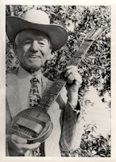

Elektrogitar modern müziğin en önemli icatlarından birisidir. Blues, Rock'n roll, Country, Heavy Metal hatta Caz, türü ne olursa olsun elektro gitar kendi karakteristiği olan çok yönlü bir müzik aletidir. Yüz yıldan daha az bir süre geçmişi olsada bu zaman içerisinde bazı modelleri yıllarca aynı kalıp diğerleri değişimlere uğramıştır. Günümüzde de bu gelişme devam etmektedir ancak ne kadar değişse de köklerine daima sadık kalmıştır.
1924 yılında Ses mühendisi Lloyd Loar ilk gitar manyetiğini tasarladı. Bu manyetik ile gitar tellerinin titreşimlerini elektrik sinyallerine çevirebilmişti. Ancak, ilk elekro gitarın üretilmesi 1931 yılından önce olmadı. ‘Kızartma tavası’ (Frying pan) diye adlandırılan bu çelikten yapılmış müzik aleti, Rickenbacker Electro firmasından George Beauchamp tarafından tasarlandı. Beauchamp, 1936 yılında elektro gitar patentini almıştır.
‘Kızartma tavası’ aslında Hawaii müziği için tasarlanmıştı. Çünkü o yörenin müziğinin temel enstrümanı gitardı ve Beauchamp kalabalık bir ortamda herkesin duyabilmesi için gitar sesini yükseltmeye ihtiyaç duyuyordu. Aynı süre içerisinde, orkestralarda da bu enstrüman populer olmaya başlamıştı. Tek manyetik takılmış bu gitarlar, orkestralardaki diğer üflemeli çalgıların kuvvetli seslerinin arkasından artık sesini duyurabiliyordu. Charlie Christian ve Benny Goodman kendi adlarını taşıdıkları orkestralarında, çelik telli akustik Gibson ES-150 modele taktıkları manyetikle kullanmaya başladılar.
FENDER
Leo Fender kendisine ait dükkanında radyo tamirciliği yapardı. Aslında saksafon çalardı ve hayatında hiç gitar çalmamıştı. Leo Fender, gitar mayetiğinin ‘kızartma tavası’ndaki gibi büyük olması gerekmediğini düşünüyordu. Bu düşünce ile yola çıkarak aynı mantıkla çalışan manyetiklerin küçüklerini geliştirip bunları standart klavyeli gitarlarda kullanmayı denedi.
Tarihteki ilk Fender Stratocaster gitar, 1954 yılında George Fullerton, Freddie Tavares ve Leo Fender tarafından tasarlandı. Stratocaster yada Strat model gitar, o zamandan beri dünyanın en çok kopyalanan gitarı oldu. Stratocaster ilk olarak Amerikan Folk Müziği sanatçısı Bill Carson için tasarlandı. ‘Bu gitar bana özel dikilmiş bir gömlek gibi omalı’ diye ifade eden Bill Carson her ne kadar Stratocaster’i desteklese de Strat’ı yaptığı bütün stüdyo kayıtlarında kullanan ilk rock’n roll müzisyeni Buddy Holly’dir.
Fender Stratocaster ve Telecaster, rock, blues ve Amerikan folk müziği olan Country tarzının en çok tercih edilen gitarıdır. Bu arada Fender 1950 yılında, sonraları Telecaster diye adlandırılan ‘Broadcaster’ adında bir model üretti. Sonrasında Strat, Jimi Hendrix gibi solak gitaristlerin elinde görülmeye başladı. Telleri ters sırayla takan Hendrix bu şekilde çaldığı Strat’ını sahnede çalarken yakan ilk gitarist olarak da tarihe geçmiştir.
GİBSON
1940 yılının sonlarında ortaya çıkan Les Paul’un ‘Kütük’ (The Log) diye adlandırılan ilk prototipi ilk tasarlandğında reddedildi. Ancak, masif gövdeye sahip olmayan gövdesi boş gitarlarda eko problemleri yaşanıyordu ve bunu aşabilmenin tek yolu ise manyetiklerin etrafındaki boşluğun azaltılmasıydı. Bunuda gerçekleştirebilmenin tek yolu masif bir gövde idi. O yıllarda Thomas Edison’un tasarladığı yekpare gövdeye sahip manyetikli kemanları örnek aldılar. Gibson, bu yeni akım yekpare gövde modasına ayak uydurmak istiyordu. Gibson şirketinin başkanı Ted McCarty, Gitarist Les Paul ile çalışmaya başladı. İlginç tesadüf; McCarty de aynı Leo Fender gibi hayatında hiç gitar çalmamıştı.